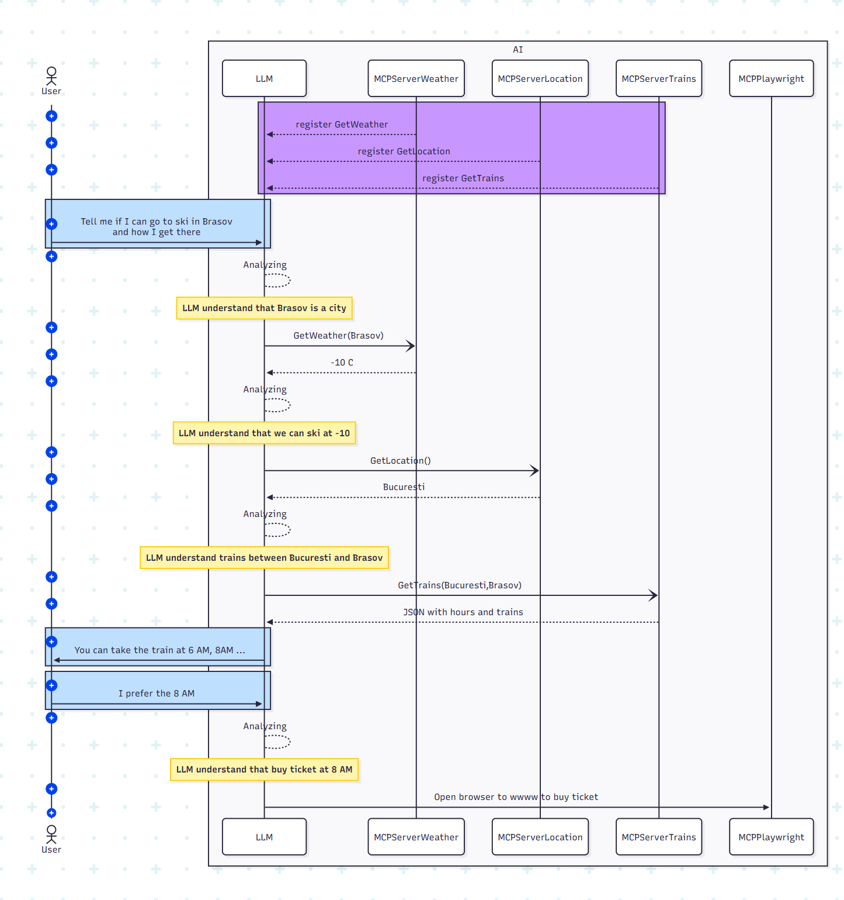

Welcome to MCP Tools
Press space to navigate.
Press left arrow to go back.
Press right arrow to go forward.
Online at https://ignatandrei.github.io/Presentations/MCPToolsprez.html
For download https://ignatandrei.github.io/Presentations/MCPTools.zip
For notes press S
For print ?print-pdf
For all slides press ESC
Press space to navigate.
Press left arrow to go back.
Press right arrow to go forward.
Online at https://ignatandrei.github.io/Presentations/MCPToolsprez.html
For download https://ignatandrei.github.io/Presentations/MCPTools.zip
For notes press S
For print ?print-pdf
For all slides press ESC
System.Console.WriteLine("Ignat Andrei");
System.Console.WriteLine("MCP Tools");
 Andrei Ignat http://msprogrammer.serviciipeweb.ro/
Andrei Ignat http://msprogrammer.serviciipeweb.ro/
YouTube 5 minutes .NET and tools : http://bit.ly/5MinTools
Book Making Open Source Component : http://bit.ly/NetOpenSourceComponent
Book Copy Paste from StackOverflow : https://amzn.to/2PQ8EDc
Roslyn Source Code Generators with examples : https://ignatandrei.github.io/https://ignatandrei.github.io/RSCG_Examples/
Monthly meetings: https://www.meetup.com/Bucharest-A-D-C-E-S-Meetup/
What is LLM
Running a LLM ( with Ollama )
MCP
Click to enlarge 
https://modelcontextprotocol.io/introduction
In the notes, the mermaid diagram
FileSystemExample
https://modelcontextprotocol.io/examples
VS And MCP
In VS you can add MCP servers to use with copilot.
Construct MCP Server
Code for construct MCP Server
List of MCPServers
Official
Not official
Not official